梅吉、家をもらう [梅吉]
新しいダンボールハウスとたくさんのひもに興奮する梅吉さん。
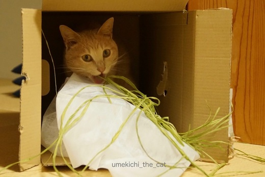
石黒亜矢子さんの描く妖怪猫みたいになってますよ。
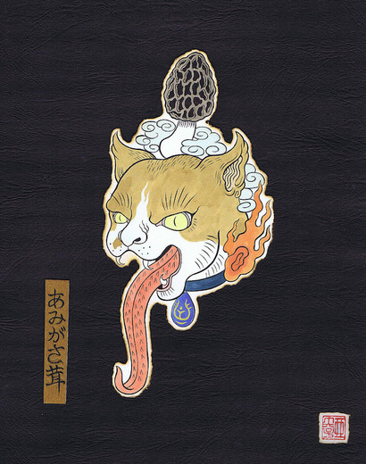
石黒さんのHPから拝借
ほら、そっくり。笑
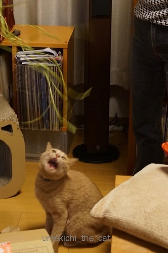
ほらほら、ひもですよー。
なぜこんなのがあるのかというと
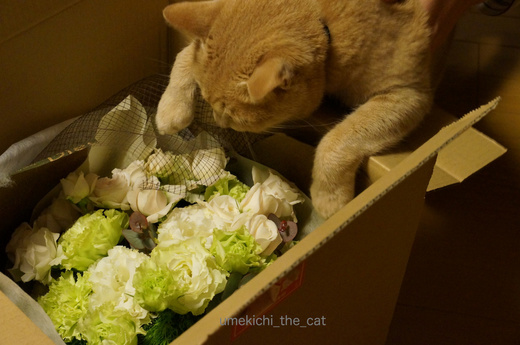
お花が届きました！梅吉かぶりつき。笑
先日は結婚記念日でした。お花は毎年おっとがオーダーしてくれます。ありがとう！
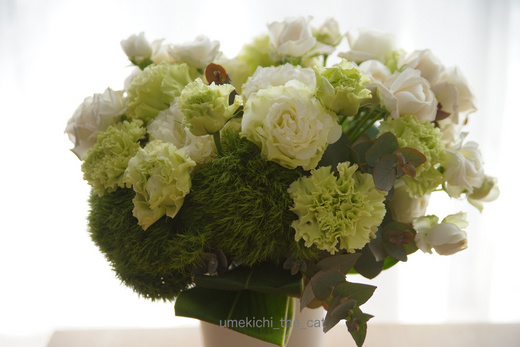
白からグリーンのグラデーションが良い感じ。
せっかくのお花ですが愛でていられるのは
お花に手を伸ばせる範囲に座っていられる時のみ。
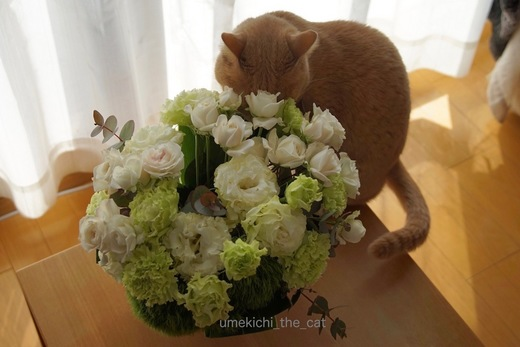
ちょっと目を離すとこんなことに・・・^^;
お花の定位置はトイレの中・・・この時期トイレが華やかになる我が家でした。
 ↑ガブッと一押し↑
↑ガブッと一押し↑
毎年オリジナルラベルのビールをオーダーしています。
サッポロビールのフォトビーというサイト。
（去年までは「わくわくブリュワリー」だったのがフォトビーに変わっていました。）
今年のビールは
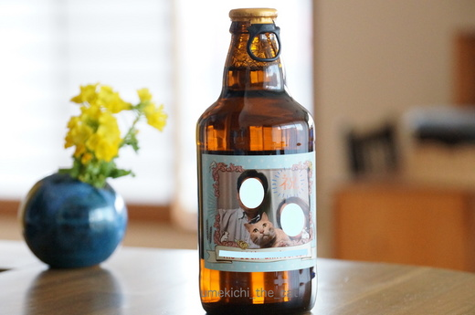
こんなの！
もちろん梅吉も一緒です。というか梅吉メイン。
飼い主二人の写りよりも梅吉が正面を向いた写真が採用です。笑
ビールタイプは、ピルスナー、ヴァイツェン、デュンケルの３タイプの中から選べます。
全種類制覇しましたがどれもイケますよ。
過去にオーダーしたのはこんな感じです。
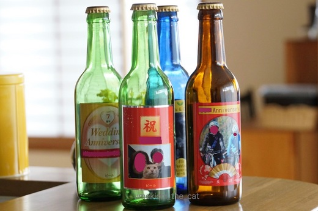
いま手元に残っているビンは4本。
もっとあったような気がするんだけど捨てちゃったのだろうか・・・
去年のビールから梅吉が登場してます。
来年のはどんな写真になるかな〜。
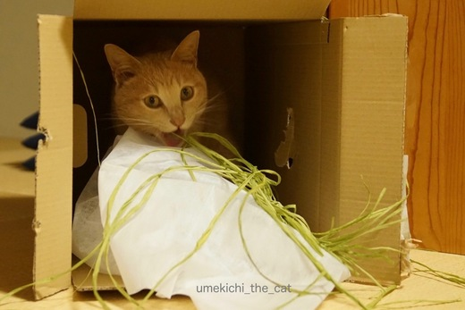
石黒亜矢子さんの描く妖怪猫みたいになってますよ。
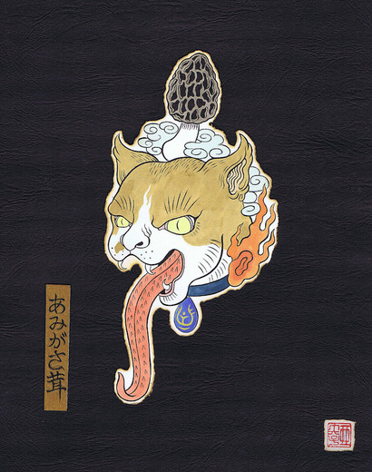
石黒さんのHPから拝借
ほら、そっくり。笑
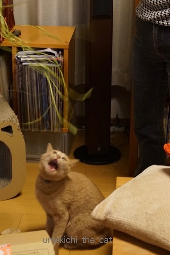
ほらほら、ひもですよー。
なぜこんなのがあるのかというと
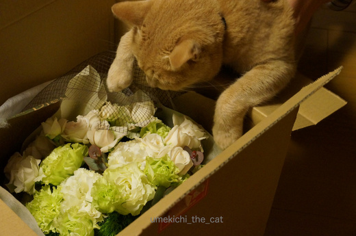
お花が届きました！梅吉かぶりつき。笑
先日は結婚記念日でした。お花は毎年おっとがオーダーしてくれます。ありがとう！
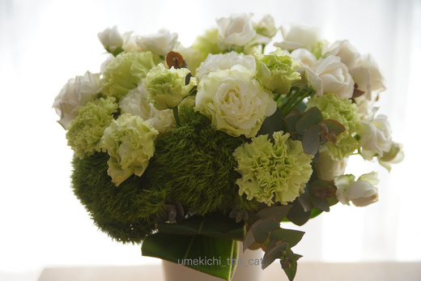
白からグリーンのグラデーションが良い感じ。
せっかくのお花ですが愛でていられるのは
お花に手を伸ばせる範囲に座っていられる時のみ。
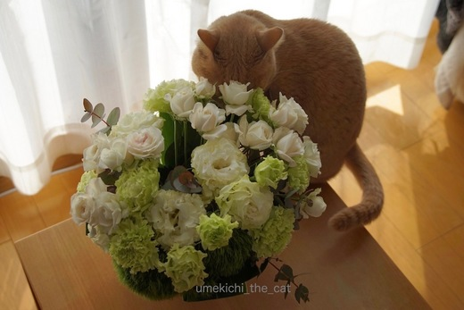
ちょっと目を離すとこんなことに・・・^^;
お花の定位置はトイレの中・・・この時期トイレが華やかになる我が家でした。
毎年オリジナルラベルのビールをオーダーしています。
サッポロビールのフォトビーというサイト。
（去年までは「わくわくブリュワリー」だったのがフォトビーに変わっていました。）
今年のビールは
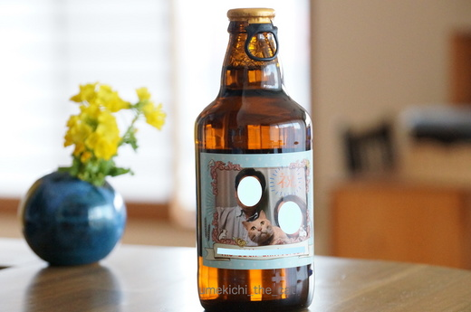
こんなの！
もちろん梅吉も一緒です。というか梅吉メイン。
飼い主二人の写りよりも梅吉が正面を向いた写真が採用です。笑
ビールタイプは、ピルスナー、ヴァイツェン、デュンケルの３タイプの中から選べます。
全種類制覇しましたがどれもイケますよ。
過去にオーダーしたのはこんな感じです。
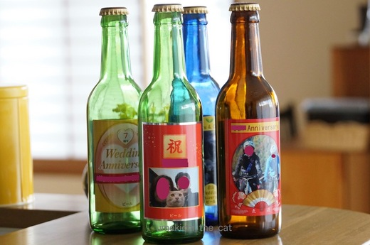
いま手元に残っているビンは4本。
もっとあったような気がするんだけど捨てちゃったのだろうか・・・
去年のビールから梅吉が登場してます。
来年のはどんな写真になるかな〜。

カフェオレ色の梅吉

梅吉 2023年8月10日 永眠


梅吉と出会った譲渡会

犬猫の理由なき殺処分ゼロ
妄想広告
UMEKICHI 光

爆発的に早い！
時々攻撃的！
Thanks to Mr.Boss365
爆発的に早い！
時々攻撃的！
Thanks to Mr.Boss365

結婚記念日にゴージャスな花、夫さんさすがです(^O^)
うちはかみさんが結婚記念日（だけじゃないけどｗ）を忘れる人なので、
タイミングがあえば外食するくらいです＾＾
いたずらにゃんこのいる家庭で花を飾るのは危険ですよねぇ(^^;)
by ニッキー (2017-03-06 16:16)
結婚記念日おめでとうございます^^
毎年お花を手配してくれるなんて、なんてすてきな旦那様！
うちなんて、お花ほしいよって言っても無視ですよ、無視！(笑)
フォトビー、いいですね。
うちも作ってみようかなあ^^
by リュカ (2017-03-06 16:31)
結婚記念日おめでとうございます！花を送ってくれるなんていい旦那さんですね。うちは結婚11年目に10年目おめでとう！と言われたことがあります。今ではお互いに結婚記念日を忘れている状態です(^_^;)
by palpal (2017-03-06 17:05)
結婚記念日おめでとうございます＼(^o^)／
毎年お花を用意してくださる旦那さま、なんて素敵♪
今日のちぃさんの記事、印刷して相方の見えるところに貼り出しておこう！
我が家も生花の飾り場所はトイレです^^;
オリジナルラベル、いいですね！こてつの写真で作ってみようかな～。
by ゆきち (2017-03-06 17:33)
結婚記念日にオリジナルラベルのビール、いいですね！
オサレ居酒屋さんみたいに、棚の上(壁の出っ張り？)に空き瓶をずらっと並べても良さそう…梅吉君の餌食？
結婚記念日、うちでは特に何もしないですけど、ガッツリ呑める機会を逃す手はないですね(そっち？)。今年はちょっぴり高いシャンパンとチーズでも買おうかしら…
ヒモクイ妖怪うめきちこぞう…新境地を開拓してきますね。コワ可愛い！
by BillK-ko (2017-03-06 18:38)
ステキな結婚記念日ですね♪
ちぃさんが素敵だから
旦那さまもこんな素敵なことを
してくださるのですね(#^.^#)
二人の記念日を盛り上げてくれるのは
やはり梅吉さんですね♪
by きぃ (2017-03-06 19:25)
結婚記念日、おめでとうございま～す(^^♪
オリジナルラベルのビールなんて超オシャレ～
若いって羨ましいで～すd（*＾o＾*）b
梅吉さんはマイペースで欲しいモノ探しですが
可愛いので全部許されますね～（*∩ω∩*）
by makkun (2017-03-06 19:42)
結婚記念日おめでとうございます！！
素晴しい旦那様ですね！
妖怪は大好きです！
あの・・・いや、本当に目の前に出てきたら怖いですが（汗）。
ビールのオリジナルラベルが作れるなんて知りませんでした。^^;
by yes_hama (2017-03-06 21:09)
結婚記念日、おめでとうございます。
ご主人様からのお花が届くとはドラマの世界ですよ〜
ホント、夢のような出来事です。
愛されていますね。
by kiki (2017-03-06 21:30)
うわぁー！！
素敵ですねぇ！！
うちは大した事しないけど、
サプライズ的な事されたら嬉しいですよねぇ(o^^o)♪
ダンボールでハッスルしてる梅吉さんが可愛いですねぇ！！
by sumi-cyan (2017-03-06 22:40)
おめでとうございます！
オリジナルラベルのビールでお祝いなんて、
ステキ過ぎますよー(^｡^)
by よーちゃん (2017-03-07 08:09)
結婚記念日おめでとうございます。仲が良くて羨ましいです。
梅吉さん、妖怪だったのか（＠＠）
by じゅらまろ (2017-03-07 15:19)
ニッキーさん＞ニッキー家ではゴッドマザー様が記念日スルーなんですね〜。
細かいことは気にしないよっ！という方なのかな？
好きになっちゃいそう・・・笑
リュカさん＞ありがとうございます♪
相方さんはお花のリクエスト無視ですか・・・(≡д≡）残念！
間違いないプレゼントで絶対喜んでもらえるのにね〜。
フォトビー、ぜひぜひ。全種類制覇して！笑
palpalさん＞10年目おめでとう！と堂々と言われるとね・・・^^;
でもちょっと分かる気もしますよ。
年月がすぎると数が曖昧というかあやふやというか・・・
自分のトシなんてちょっと考えないとわからないもの！！爆
ゆきちさん＞おお！わがおっと、女子の皆さんから高評価。笑
それぞれの相方さんたちからは「ちっ・・・・」と思われてるかもー。
でも、奥さんウケする事、真似しない手はないですよね！！
こてつくんラベルのビールぜひぜひ〜＾＾
かわいい写真が多すぎて選ぶの苦労しそうだ・・・
BillK-koさん＞棚の上にビールの空き瓶・・・・きゃ〜っ！
朝起きたらマキビシぶちまけたみたいになってるわよ〜。
忍者じゃないから避けるの無理、無理。
うちの記念日も同じく「心置き無く飲むぞ〜」という日です。
よって外食よりも宅飲み。ちょと良いお肉買ったりサラダ作ったり。
お家が落ち着くお年頃になってきたわ・・・・=´ᆺ`=
きぃさん＞まぁ〜過分なお褒めのお言葉照れますぅ・・・(´◡`๑)
二人と一匹きりの家族なのでそれぞれを思いやって
（梅吉はどう思っているのかわかりませんが。笑）
過ごしてゆきたいな・・・と思っております(⌯¤̴̶̷̀ω¤̴̶̷́)✧
makkunさん＞ありがとうございます♪
オリジナルラベルのビール、CoCoタンでいかがですか？
飾っておくだけでも良いですよ〜。
梅吉が我が家に来て7月で2年になりますが
今では梅吉のいない生活なんて考えられません。
ほとんどのことは許される（ダメもちゃんとありますよ〜）我が家の中心です！
yes_hamaさん＞アズくんビールいかがですか・・・・？
私も妖怪好きなんです・・・同じく目の前いると怖いですが。笑
あ、でも梅吉なら妖怪になって出て来てもらいたい！！
きっとガブガブされるんだろうなぁ。
kikiさん＞お褒めのお言葉ありがとうございます！
おっとが小鼻を膨らませておりますよ〜。笑
sumi-cyanさん＞お花はいつもらっても嬉しいですよね♪
我が家もお花のイベント（？）のあとは普通の宅飲みに突入です。
普段通りが一番！
ハッスル！ふふふ・・・昭和のかほりがするわ・・・
よーちゃん＞ありがとうございます〜♪
お元気そうでなによりです！
よーちゃんはなすびランでゴーーールッ！のラベルかなぁ。笑
by ちぃ (2017-03-07 15:56)
じゅらまろさん＞うちは子供がいないから仲良くせんとね〜。
ちゃんと看取ってもらわないと！笑
梅吉、妖怪化が進んでおります。
このまま妖怪猫になって
おとーさんとおかーさんの老後の面倒みてほしい(*≧ｍ≦*)
by ちぃ (2017-03-07 16:00)
結婚記念日おめでとうございます♪
毎年お花が届くなんて優しい旦那様ですねぇ(*^ー^*)
妖怪猫・・・
笑ってしまったけど妖怪梅吉さんも可愛いです＾＾
by Moon (2017-03-07 18:31)
Moonさん＞ありがとうございます♪
結婚当初「毎年恒例だよね！」という密かなプレッシャーをかけ続けた・・・
のが実ったのかもしれません。ふふふ＾＾
梅吉は可愛い顔はあまりしませんが妖怪顔はとっても多い！
己のキャラをよく分かっているのでしょう・・・笑
by ちぃ (2017-03-08 10:40)